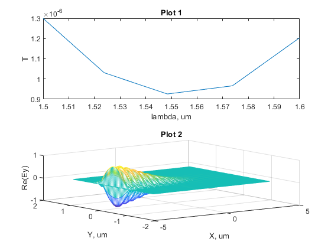

clear all;
c0 = physconst('LightSpeed');
lengthstr = 10;
widthWG = 1;
hightWG = 1;
sim1 = LumericalConnection('version', 'v222');
sim1.AddRect( ...
'x span', 10, 'y span', 1, 'z span', 1, ...
'x', 0, 'y', 0, 'z', 0, ...
'material', 'Si (Silicon) - Palik');
sim1.AddVarFDTD('x span', 10, 'y span', 10, 'z span', 10, ...
'x', 0, 'y', 0, 'z', 0);
comand = {'select("varFDTD");', ...
['set("simulation time", ' num2str(lengthstr*1e-6/c0 * 4 ) ')']};
sim1.SendComand(comand{:});
sim1.AddSource('x', -4, 'y', 0, ...
'y span', 3, 'wavelength start', 1.5e-6, 'wavelength stop', 1.6e-6);
sim1.AddPower('name', 'm1','monitor type', 5, ...
'x', 4, 'y', 0, 'y span', 3);
sim1.AddPower('name', 'm2', 'monitor type', 7, ...
'x', 0, 'y', 0,'z', 0, 'y span', 3,'x span', 8);
sim1.Save('Example.lms')
sim1.Run();
T = sim1.GetTransmitance('m1');
E = sim1.GetEField('m2');
sim1.AppClose();
tiledlayout(2,1)
nexttile
plot(T(:,2),T(:,1));
xlabel('lambda, um');
ylabel('T');
title('Plot 1')
nexttile
[X, Y] = meshgrid(E.X, E.Y);
mesh(X', Y', real(E.E(:,:,1,2,2)));
xlabel('X, um');
ylabel('Y, um');
zlabel('Re(Ey)');
title('Plot 2');
EFm2 = getresult("m2", "E");
